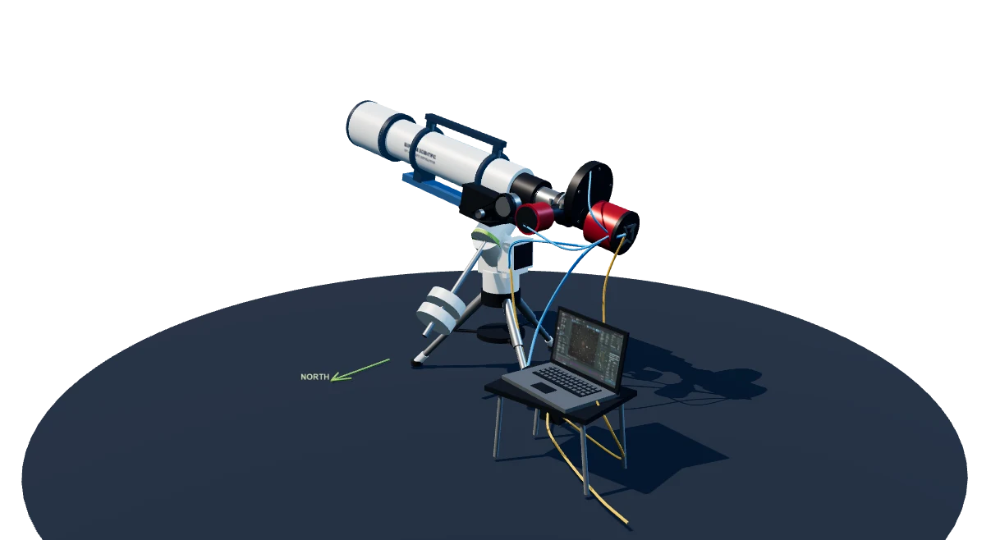

N.I.N.A.
The observing workspace brings the latest exposure, camera cooling, focus controls, target position and guiding information together. A screen stretch reveals faint detail while the captured data stays linear.
N.I.N.A. imaging guide ↗Equipment & process
Explore my ES127 imaging setup, then see how individual exposures become a finished photograph.
Follow the light through the process ↓Drag to orbit · scroll or pinch to zoom · select a component

Preparing the 3D rig…
An interactive illustration of my current setup. Proportions, adapter spacing and cable routing are simplified.
My equipment and installation photographs.
Point, focus, guide, capture.
The observing workspace brings the latest exposure, camera cooling, focus controls, target position and guiding information together. A screen stretch reveals faint detail while the captured data stays linear.
N.I.N.A. imaging guide ↗PHD2 measures guide-star motion and sends small corrections to the mount. ASTAP plate-solves an image by matching its stars to a catalog, identifying where the telescope is pointing.
Calibration, star alignment and integration build a clean master image. Background correction, color work, noise reduction and a carefully controlled stretch bring out the recorded structure.
PixInsight ↗Many exposures. One carefully built image.
The mount follows the sky while the main camera records a series of exposures. Guiding keeps stars steady, and repeated focus checks help preserve fine detail over a changing night.
Suitable dark and flat frames help correct sensor patterns and uneven illumination. The exposures are then aligned on their stars so the same features fall on the same pixels.
Averaging aligned frames reinforces the shared signal while random noise averages down. Rejection methods can reduce transient trails and outlier pixels.
Most nebular detail starts close to black in a linear image. A nonlinear stretch lifts faint values into a visible range. Careful color and contrast adjustments help reveal structure while preserving bright areas.
Simulation with normalized averages and a fixed stretch. For comparable exposures with independent random noise, signal-to-noise improves roughly with the square root of the frame count.
Linear view
The recorded signal is the same. This simulation changes the brightness mapping so faint structure becomes easier to see.
Read more about stacking and calibration and image stretching.
See where the light ends up.
Back to the photographs